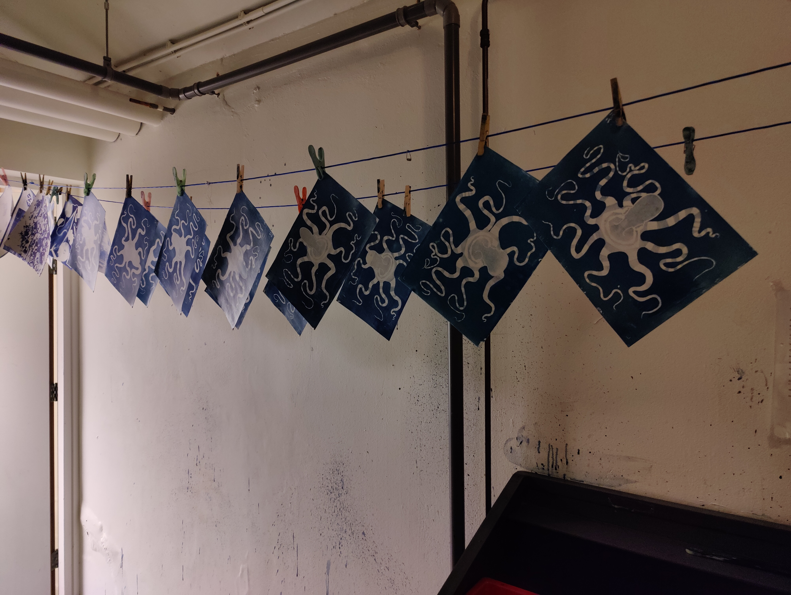
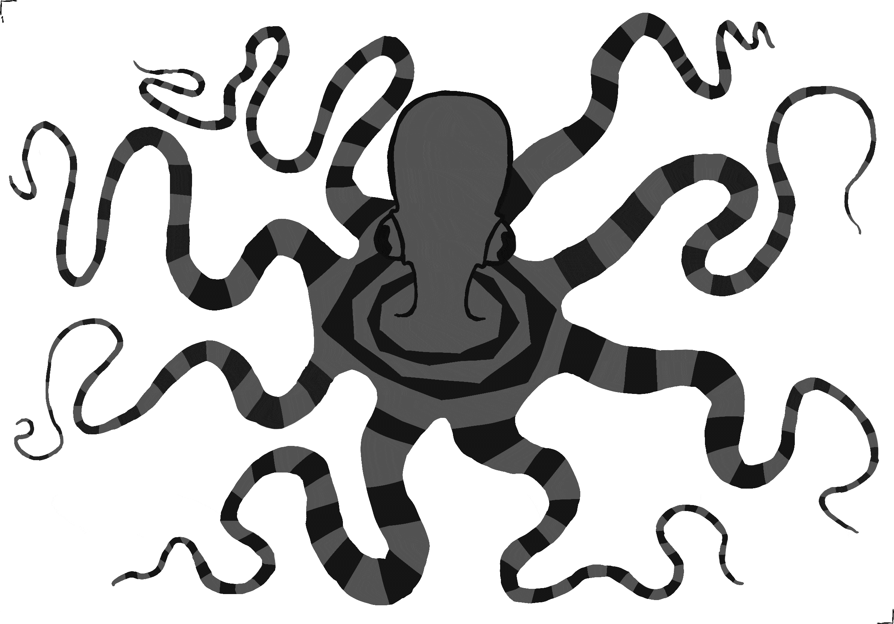

Animation description
Cyanotype is a light sensitive imaging technique known for its fibrant, textured blues. A medium fitting for portraying the fluid form of the octopus.
the octopuses fluid motion is starkly contrasted against the quickly changing natural surfaces of the solution applied to the paper.


Every frame of this project was hand drawn digitally, whereafter it was exposed onto cyanotype and processed.
The cyanotype octopus was part of a larger group project where two segments were made per member, the resulting animation was then musically improvised to by a group of conservatorium students. I was responsible for the octopus, bugs and compositing of the project.
process explanation